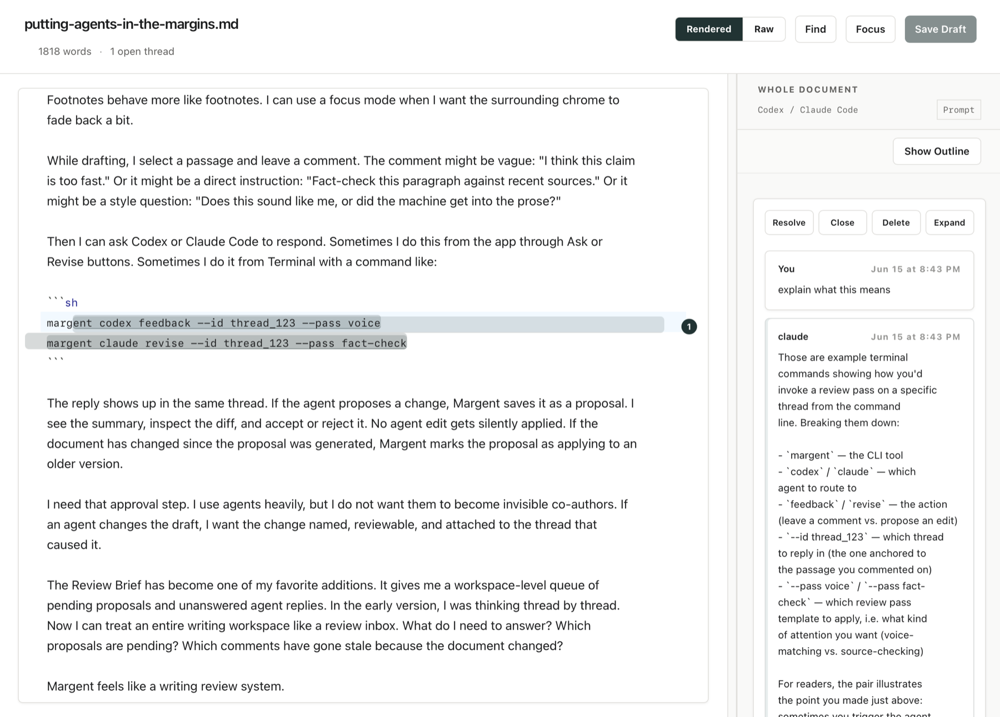

Local-first Markdown review
Margent reviews drafts. Locally.
An open-source review layer for Claude Code and Codex. Write in Markdown, leave comments in the margin, and let your agent answer or propose revisions without moving the draft into a web app.
No Margent account. No uploaded drafts. No prompt analytics. No stored API keys or OAuth tokens.
Made by Joel Gladd
Install once
Paste the prompt for your agent.
Margent is meant to be installed by the same agent you will use for
writing help. Choose Claude Code or Codex below. Both paths install
the CLI, the shared Margent skill, and the desktop app into
~/Applications.
Install Margent for me using Claude Code. Margent is a local-first Markdown writing editor for working with Claude Code. It keeps my Markdown files local and stores comments and revision state in .mdreview sidecars. The repo includes the Margent CLI and a small Claude-friendly skill so Claude Code knows how to use the CLI. Read https://raw.githubusercontent.com/Brehove/margent/main/docs/agent-setup.md and follow it as the source of truth. If you cannot run local shell commands in this chat, stop and tell me to use Claude Code or another agent mode with shell and file access. Do not ask me for API keys, OAuth tokens, or provider secrets. Margent does not collect credentials. Claude authentication must be initiated by me through claude auth login. Set up Margent on this Mac: 1. Verify macOS, Git, Node 22 or newer, Rust stable, and npm are available. 2. Clone https://github.com/Brehove/margent into a normal projects folder, or inspect the existing clone if it is already present. Do not overwrite local changes. 3. Install dependencies, run the checks in the setup doc, install the margent CLI on PATH, and run margent install --agent-skills so Claude Code can use it. 4. Install the desktop app into ~/Applications using these exact commands: osascript -e 'quit app "Margent"' 2>/dev/null || true npm run tauri build mkdir -p ~/Applications ditto src-tauri/target/release/bundle/macos/Margent.app ~/Applications/Margent.app open ~/Applications/Margent.app 5. Treat that as a local build for this Mac, not a signed and notarized public distribution artifact. Use ditto rather than cp -R. To update Margent later, rerun the build and ditto steps. For development iteration, use npm run tauri dev. 6. Check whether claude is installed and authenticated. If not, walk me through claude auth login; I will complete browser/OAuth login myself. 7. In my Markdown writing workspace, run margent init --write-config, then run claude mcp add margent -- margent mcp --workspace "$PWD". 8. Run margent doctor and summarize what works. 9. Open a sample Markdown file in Margent and show me how to ask a question or request a revision from the comment pane.
Install Margent for me using Codex. Margent is a local-first Markdown writing editor for working with Codex. It keeps my Markdown files local and stores comments and revision state in .mdreview sidecars. The repo includes the Margent CLI and a small Codex-friendly skill so Codex knows how to use the CLI. Read https://raw.githubusercontent.com/Brehove/margent/main/docs/agent-setup.md and follow it as the source of truth. If you cannot run local shell commands in this chat, stop and tell me to use Codex or another agent mode with shell and file access. Do not ask me for API keys, OAuth tokens, or provider secrets. Margent does not collect credentials. Codex authentication must be initiated by me through codex login. Set up Margent on this Mac: 1. Verify macOS, Git, Node 22 or newer, Rust stable, and npm are available. 2. Clone https://github.com/Brehove/margent into a normal projects folder, or inspect the existing clone if it is already present. Do not overwrite local changes. 3. Install dependencies, run the checks in the setup doc, install the margent CLI on PATH, and run margent install --agent-skills so Codex can use it. 4. Install the desktop app into ~/Applications using these exact commands: osascript -e 'quit app "Margent"' 2>/dev/null || true npm run tauri build mkdir -p ~/Applications ditto src-tauri/target/release/bundle/macos/Margent.app ~/Applications/Margent.app open ~/Applications/Margent.app 5. Treat that as a local build for this Mac, not a signed and notarized public distribution artifact. Use ditto rather than cp -R. To update Margent later, rerun the build and ditto steps. For development iteration, use npm run tauri dev. 6. Check whether codex is installed and authenticated. If not, walk me through codex login; I will complete browser/OAuth login myself. 7. In my Markdown writing workspace, run margent init --write-config and confirm .codex/config.toml includes the Margent MCP server. 8. Run margent doctor and summarize what works. 9. Open a sample Markdown file in Margent and show me how to ask a question or request a revision from the comment pane.
What it does
Comments stay attached to the passage.
Ask from the comment pane, or ask Claude Code or Codex from their own agent session. Margent keeps the thread, proposed edit, and source passage together.

How it works
One Markdown file, several ways in.
-
01
Open a Markdown folder. Margent keeps the text as ordinary files.
-
02
Leave comments, ask questions, or request revisions in the margin.
-
03
Let Claude Code or Codex reply through the CLI and shared skill.
-
04
Approve proposals, use Review Brief, and export to HTML or DOCX.
Agent-native
Ask in normal language.
Local and private
Your writing stays on your Mac.
Margent has no hosted account system and no server-side document
storage. Review data lives in local .mdreview files
beside your drafts. Provider login is started by you through Codex
or Claude Code, not through Margent.
- No uploaded drafts.
- No collected comments.
- No prompt analytics.
- No stored API keys or OAuth tokens.
Open source
Readable code. Inspectable setup.
The agent prompt is the front door, but the repo is the source of truth. Read the setup guide, inspect the skill, or install the CLI from source.